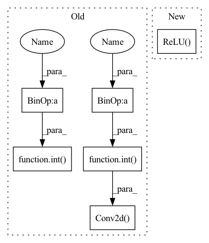

Pattern ID :955

Before Change
def __init__(self, in_planes, planes, stride=1, sketch_rate=1):
super(Bottleneck, self).__init__()
self.conv1 = nn.Conv2d(in_planes, int(planes * sketch_rate), kernel_size=1, bias=False)
self.bn1 = nn.BatchNorm2d(int(planes * sketch_rate))
self.conv2 = nn.Conv2d(int(planes * sketch_rate), int(planes * sketch_rate), kernel_size=3, stride=stride, padding=1, bias=False)
self.bn2 = nn.BatchNorm2d(int(planes * sketch_rate))
self.conv3 = nn.Conv2d(int(planes * sketch_rate), self.expansion*planes, kernel_size=1, bias=False)
self.bn3 = nn.BatchNorm2d(self.expansion*planes)
self.downsample = nn.Sequential()
if stride != 1 or in_planes != self.expansion*planes:
After Change
self.bn2 = norm_layer(conv2_planes)
self.conv3 = conv1x1(conv2_planes, planes * self.expansion)
self.bn3 = norm_layer(planes * self.expansion)
self.relu = nn.ReLU(inplace=True)
self.downsample = downsample
self.stride = stride
def forward(self, x):
In pattern: SUPERPATTERN
Frequency: 3
Non-data size: 6
Instances
Fragment ID: 3069166
Project Name: lmbxmu/epruner
Commit Name: 6250a88e8504c685486d149f1c99ec05235666e1
Time: 2020-02-12
Author: 864589477@qq.com
File Name: model/resnet_imagenet.py
M Class Name: Bottleneck
N Class Name: Bottleneck
M Method Name: __init__(11)
N Method Name: __init__(5)
M Parent Class: nn.Module
N Parent Class: nn.Module
M File Name: model/resnet_imagenet.py
N File Name: model/resnet_imagenet.py
M Start Line: 33
M End Line: 49
N Start Line: 62
N End Line: 81
'>
Before Change
def __init__(self, in_planes, planes, stride=1, sketch_rate=1):
super(Bottleneck, self).__init__()
self.conv1 = nn.Conv2d(in_planes, int(planes * sketch_rate), kernel_size=1, bias=False)
self.bn1 = nn.BatchNorm2d(int(planes * sketch_rate))
self.conv2 = nn.Conv2d(int(planes * sketch_rate), int(planes * sketch_rate), kernel_size=3, stride=stride, padding=1, bias=False)
self.bn2 = nn.BatchNorm2d(int(planes * sketch_rate))
self.conv3 = nn.Conv2d(int(planes * sketch_rate), self.expansion*planes, kernel_size=1, bias=False)
self.bn3 = nn.BatchNorm2d(self.expansion*planes)
After Change
self.bn2 = norm_layer(conv2_planes)
self.conv3 = conv1x1(conv2_planes, planes * self.expansion)
self.bn3 = norm_layer(planes * self.expansion)
self.relu = nn.ReLU(inplace=True)
self.downsample = downsample
self.stride = stride
def forward(self, x):
'>
Fragment ID: 3069167
Project Name: lmbxmu/epruner
Commit Name: 6250a88e8504c685486d149f1c99ec05235666e1
Time: 2020-02-12
Author: 864589477@qq.com
File Name: model/resnet_imagenet.py
M Class Name: Bottleneck
N Class Name: Bottleneck
M Method Name: __init__(11)
N Method Name: __init__(5)
M Parent Class: nn.Module
N Parent Class: nn.Module
M File Name: model/resnet_imagenet.py
N File Name: model/resnet_imagenet.py
M Start Line: 33
M End Line: 49
N Start Line: 62
N End Line: 81
'>
Before Change
def __init__(self, in_planes, planes, stride=1, sketch_rate=1):
super(BasicBlock, self).__init__()
self.conv1 = nn.Conv2d(in_planes, int(planes * sketch_rate), kernel_size=3, stride=stride, padding=1, bias=False)
self.bn1 = nn.BatchNorm2d(int(planes * sketch_rate))
self.conv2 = nn.Conv2d(int(planes * sketch_rate), planes, kernel_size=3, stride=1, padding=1, bias=False)
self.bn2 = nn.BatchNorm2d(planes)
self.downsample = nn.Sequential()
if stride != 1 or in_planes != self.expansion*planes:
After Change
conv1_planes = planes
self.conv1 = conv3x3(inplanes, conv1_planes, stride)
self.bn1 = norm_layer(conv1_planes)
self.relu = nn.ReLU(inplace=True)
self.conv2 = conv3x3(conv1_planes, planes)
self.bn2 = norm_layer(planes)
self.downsample = downsample
self.stride = stride
'>
Fragment ID: 3069162
Project Name: lmbxmu/epruner
Commit Name: 6250a88e8504c685486d149f1c99ec05235666e1
Time: 2020-02-12
Author: 864589477@qq.com
File Name: model/resnet_imagenet.py
M Class Name: BasicBlock
N Class Name: BasicBlock
M Method Name: __init__(11)
N Method Name: __init__(5)
M Parent Class: nn.Module
N Parent Class: nn.Module
M File Name: model/resnet_imagenet.py
N File Name: model/resnet_imagenet.py
M Start Line: 8
M End Line: 22
N Start Line: 19
N End Line: 37
'>
Before Change
self.global_avgpool = nn.AvgPool2d(size)
else:
self.global_avgpool = nn.AdaptiveAvgPool2d(1)
self.conv1 = nn.Conv2d(inplanes, int(inplanes / squeeze_ratio), kernel_size=1, stride=1)
self.conv2 = nn.Conv2d(int(inplanes / squeeze_ratio), inplanes, kernel_size=1, stride=1)
self.relu = make_activation(activation)
self.sigmoid = nn.Sigmoid()
After Change
self.pointwise = nn.Conv2d(in_planes, out_planes, kernel_size=1, bias=bias)
self.bn1 = nn.BatchNorm2d(in_planes)
self.bn2 = nn.BatchNorm2d(out_planes)
self.relu = nn.ReLU()
def forward(self, x):
x = self.depthwise(x)
x = self.bn1(x)
'>
Fragment ID: 3069122
Project Name: opendr-eu/opendr
Commit Name: 18da6a5d3ed5c2a291cb9c600a9fe4e5e17e5671
Time: 2021-01-26
Author: ptosidis@gmail.com
File Name: src/perception/face_recognition/algorithm/backbone/model_mobilenet.py
M Class Name: SELayer
N Class Name: DepthwiseSeparableConv
M Method Name: __init__(6)
N Method Name: __init__(5)
M Parent Class: nn.Module
N Parent Class: nn.Module
M File Name: src/perception/face_recognition/algorithm/backbone/model_mobilenet.py
N File Name: src/perception/face_recognition/algorithm/backbone/model_mobilenet.py
M Start Line: 153
M End Line: 162
N Start Line: 35
N End Line: 42